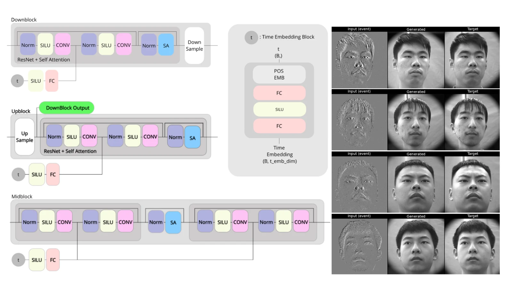

ResearchNeVi2026 Workshop · ECCV 2026
eBIRD paper at NeVi2026, ECCV 2026

I am proud to be a co-author of the publication that will be presented at the NeVi2026 Workshop, within ECCV 2026 in Malmö, Sweden.
eBIRD: Event-based Intensity Image Reconstruction Using Controllable Diffusion Models
Ignacio Bugueno-Cordova, Fabian Ignacio Valderrama Peñaloza, Rodrigo Verschae.
I want to thank Rodrigo Verschae and Ignacio Bugueno-Cordova for their support and collaboration throughout this work. It has been a privilege to be part of this project with them, and I deeply value their commitment, guidance and constant work to carry it forward.